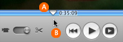
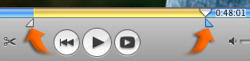

Cropping video clips
Cropping allows you to edit a clip by keeping only the portion of video you like and removing the rest.
It's a good idea to crop your clips before dragging them out of the Clips pane and into your movie. However, you can also crop a clip after you've added it to your movie by selecting it in the clip viewer or timeline viewer.

To crop a clip:
- Select the clip you want to crop by clicking it in the Clips pane, clip viewer, or timeline viewer.
- Drag the playhead (A, shown above) to where you want your scene to begin.
- Place your pointer (B, shown above) just below the playhead, and then drag to the right to include the footage you want to keep.
- To precisely adjust where the selected footage begins and ends, click a crop marker (shown below) to select it, and then press the Left or Right Arrow key to move the crop marker one frame at a time. To move the marker in ten-frame increments, hold down the Shift key while pressing the arrow key.
- Choose Edit > Crop to keep the portion of video you've highlighted and remove the rest.
The gold portion of the scrubber bar (shown below) highlights the footage you've selected.
Tip: You can see the duration of your selected footage in minutes:seconds:frames at the bottom edge of the iMovie window.

If you want to trim away only the beginning or end of a clip, drag the crop markers to highlight the portion you want to remove, and then choose Edit > Clear.
When cropping, keep in mind that iMovie HD only hides the footage you don't want to show and doesn't actually remove or delete it. If you trim away too much, you can always choose Edit > Undo to cancel your change, or extend the clip back to the desired length by dragging one of its edges in the timeline viewer. For more information, see "Fine-tuning where a clip begins and ends."
Related Topics
Fine-tuning where a clip begins and ends
 Was this page helpful? Send feedback.
Was this page helpful? Send feedback.